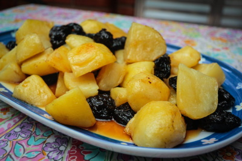

-
Batatas assadas com caramelo & ameixas
Ingredientes
. 1 Kg de batatas Asterix
. 120 ml de gordura de ganso ou óle de girassol
. 150g de ameixas secas sem caroço
. 90g de açúcar
. 50 ml de água gelada
. sal a gosto
Modo de Preparo
Preaqueça o forno a 220º
Descasque as batatas e corte em pedaços, enxágue em água fria e coloque na panela grande, ferver em fogo baixo por 10 minutos.
Coloque a gordura de ganso numa assadeira e aqueça o forno ate enfumaçar, por cerca de 8 minutos. Coloque delicadamente as batadas na gordura quente usando pegadores, rolando par que fiquem cobertas
Quando estiver quase prontas, retire a assadeira, acresciente 1/2 colher de cha de sal e as ameiras, junto delicadamente e leve de volta ao forno.
repare o caramento e antes de servir, misture o caramento às batatas e ameixa, transfira para uma travessa e consuma imediatemente (Yotam Ottolengui e Sami Tamimi).